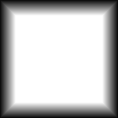
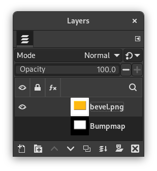

Figure 17.259. Example for the “Add Bevel” filter
Original image, the colored rectangle is selected

Filter applied
This filter adds a slight bevel to an image using a bump map (see below). If there is a selection, it is bevelled, otherwise the filter has no effect.
Figure 17.260. Another “Add Bevel” example, with bumpmap
Original image

Bumpmap
Filter applied
![[Note]](images/note.png)
|
Note |
|---|---|
|
If the image is in grayscale mode or indexed mode, this menu entry is disabled. |

- Thickness
-
You can specify the thickness of the bevel, in pixels. Maximal thickness is 30 pixels.
- Work on copy
-
If checked, the filter creates a new window containing a copy of the image with the filter applied. The original image remains unchanged.
- Keep bump layer
-
When checked, you will keep the generated bumpmap as a new, not visible layer:

Layers Dialog with “Keep bump layer” enabled